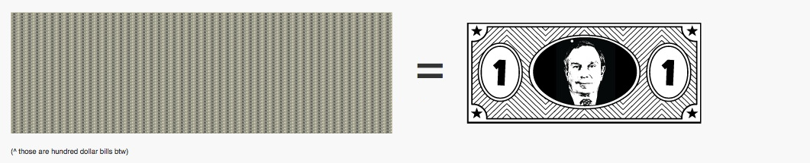

That's median net worth of an American family - investments, property, cash, everything. And remember, median means that half of Americans have less than that.
This is $250,000
This is how much money Mike Bloomberg donated to Planned Parenthood this week.
Now that's a lot of money, right? But how much does $250,000 cut into Mike Bloomberg's pocketbook? Let's see how his wealth compares to that of the average American Family.
This is $19,000,000,000
(that's 19 billion dollars - it's about how much Mike Bloomberg is worth.)
Scroll to the right to see exactly how it compares →
For Mayor Bloomberg, $250,000 is literally pocket change. With a net worth around 19 billion dollars, Bloomberg is America's wealthiest politician and one of the wealthiest people in America, ranked as high as #8 in recent years. The median net worth (income, property, investments) of an American family on the other hand is about $96,000.
That's a ratio of 197,916 to 1.

So for every one dollar you have, Bloomberg would have about 200,000 - you can say that a Bloomberg Buck is a unit of currency worth about 200,000 normal US dollars.
A house in Park Slope, worth about 2.5 million American dollars, would cost about $12.50 in Bloomberg Bucks. An Ivy League education could be paid for with about 60 Bloomberg cents. A new laptop, worth about $2,000 could be purchased for a Bloomberg Penny. Loaning your friend $5 isn't a big deal, and if you had Bloomberg Bucks, that five-spot would be like loaning a friend $2,000,000.
See where we're going with this? Mike Bloomberg donating $250,000 to Planned Parenthood for breast cancer screening would be like you donating about 1 dollar and 63 cents - literally pocket change. It's not nothing, but it's not exactly front-page news. Which leads us to ask, why not just donate the full Three Bloomberg Bucks and pay off all of the money that Planned Parenthood is going to lose from the Komen Foundation? Why, if providing breast cancer screening for every American only costs us about $30 per year, are we even having trouble coming up with the money at all?